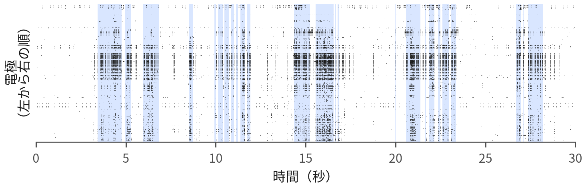
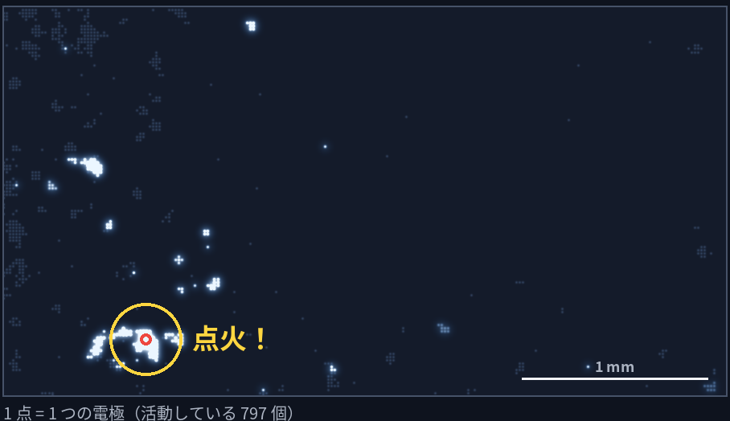
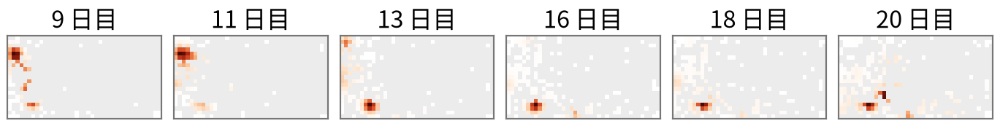
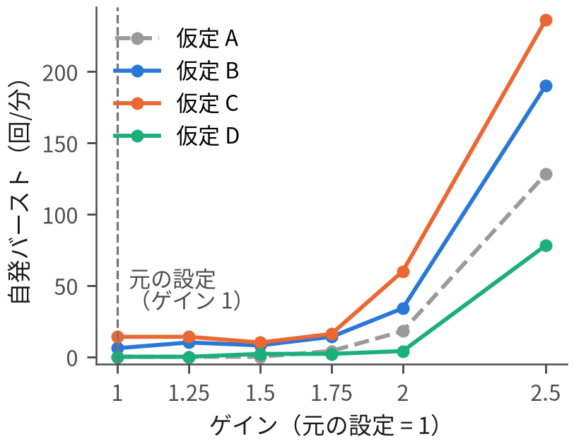
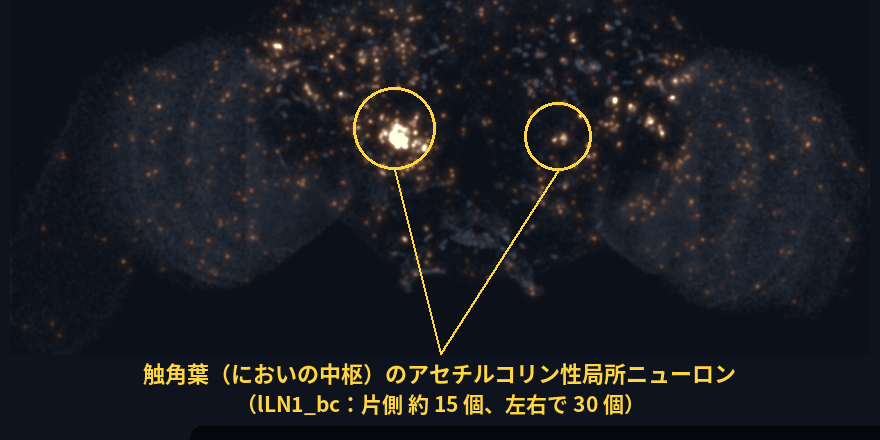
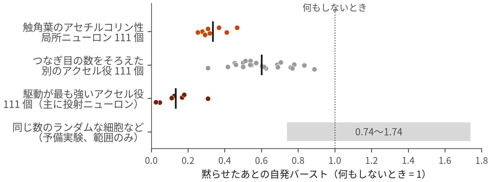
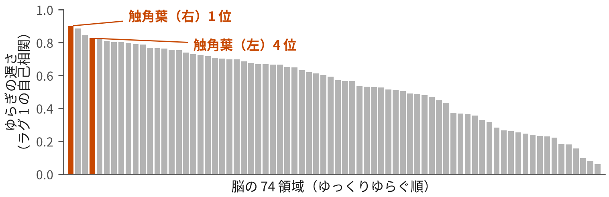

脳の「火種」はどこにある？
お皿の上の神経とハエの脳の配線図で、自発活動の中心を探す
神経のネットワークは、何もしなくても、ときどき全体でいっせいに発火する。その火はどこからつき、何に支えられているのか。お皿で育てた神経細胞とハエの脳の配線図を同じ物差しで調べると、においの中継所にある、いつも燃え続けるアクセルのループが浮かび上がった。
30 秒でわかる要約
- 神経細胞のネットワークは、外から何も入れなくても、ときどき全体でいっせいに発火します（ネットワークバースト）。お皿で育てたラットの神経細胞で調べると、その火がつく場所（点火点）は、日をまたいでも同じ「ホットスポット」に戻ってきました。
- 0.1 mm 四方の場所ごとに比べると、点火点は「よく発火する場所」よりも、ネットワークがいちばん増幅しやすいゆらぎのパターン（主モード）とよく重なっていました。ただし効果は中くらいで、電極の配置の影響も受けます。
- ハエの脳の配線図（138,639 個のニューロン）から作ったコンピューターの脳では、配線の主モードが左右の触角葉（においの中継所）のアクセルのループ（局所ニューロンと投射ニューロン）に集まっていました。文献と矛盾しない仮定では、ここの細胞はいつも燃え続ける「エンジン」で、100 個あまりの細胞が脳全体のアクセル信号の約半分を出していました。ループの一部（111 個）を黙らせると、自発バーストは 4 分の 1〜半分に減りました。
- 本物のハエ 20 匹の脳の記録でも、触角葉は脳の中でいちばんゆっくり、大きくゆらぐ場所でした。これは予測と矛盾しない結果ですが、証明ではありません。本物のハエで確かめるのはこれからです。
1脳は、何もしなくても動いている
脳はニューロン（神経細胞）という小さな部品でできています。ニューロンは長い「電線」を伸ばしてほかのニューロンとつながり、そのつなぎ目をシナプスと呼びます。
ニューロンの中には、入ってくる信号で少しずつ電気がたまります。ある量（しきい値）を超えると、一瞬「パチッ」と信号を出して元に戻ります。この「パチッ」がスパイクです。日本庭園のししおどしに似ています。竹筒に水がたまり、いっぱいになると「カコン」と倒れて空になり、また水がたまり始めます。1 秒間に何回パチッとしたかを Hz（ヘルツ）で表します。
ニューロンには、相手をパチッとさせやすくするアクセル型（興奮性）と、させにくくするブレーキ型（抑制性）があります。どちらなのかは、つなぎ目で出す化学物質（神経伝達物質）の種類で決まります。たとえばアセチルコリンはアクセル、GABA はブレーキです。
「自発活動」とは
驚くことに、脳は外から何の刺激がなくても、静かになりません。ニューロンはあちこちで勝手にパチッとしています。これを自発活動と呼びます。コンサートの開演前、客席がなんとなくざわざわしている状態に似ています。誰かが話し、隣が笑い、またどこかで声が上がる。脳はいつも、こうした「ざわめき」の上で動いています。眠っているときの脳波も、自発活動の一種です。
2お皿の上の神経と、電極チップ
自発活動をいちばん単純な形で見られるのが分散培養です。ラットの胎児（生まれる前の赤ちゃん）の大脳皮質から神経細胞を取り出し、一つ一つばらばらにしてお皿にまきます。すると細胞たちは、1〜2 週間のうちに自分たちで電線を伸ばしてつながり合い、小さなネットワークを作ります。誰も設計していないのに、です。
そのお皿の底に電極を並べておけば、細胞のパチッを電気的に聞き取れます。これが MEA（多電極アレイ）です。この研究で使った MaxOne という高密度 MEA（HD-MEA）は、約 4 mm × 2 mm の範囲に 26,400 個の電極が 17.5 マイクロメートル（髪の毛の太さの数分の 1）間隔で並び、1 回の記録ではそのうち約 1,000 個を選んで聞きます。床一面にマイクを敷き詰めたホールのようなものです。
データは、ほかの研究グループ（Nakamuta、Takahashi ら）が MaxOne で記録して公開したもの（DANDI 002020。7 つの培養を、ほぼ毎日 30 分ずつ記録）を使いました。古典的な別のデータ（Wagenaar ら 2006。電極 59 個、30 培養）で、再現するかも確かめています。
3いっせい発火（バースト）と「点火点」
培養した神経を眺めていると、ふだんはぱらぱらと発火しているのに、数秒から数分に 1 回、ネットワーク全体がいっせいに発火します。これをネットワークバーストと呼びます。客席のざわめきが、ある瞬間、スタジアムのウェーブのように全体に広がる感じです。

ウェーブは、誰かが最初に立ち上がらないと始まりません。山火事も、どこか 1 か所で火がついて燃え広がります。バーストも同じで、まず小さな 1 か所が発火し、そこから周りへ広がっていきます。この最初の場所を、この研究では点火点と呼びます。具体的には、各バーストの最初の 20 個のスパイクが出た場所の中心です。

森のどこで火がつきやすいかがわかれば、山火事の対策が立てられます。同じように、どこから火がつくのか、何がそこを火元にするのかがわかれば、脳が自発的に動くしくみや、「暴走」の弱点を知る手がかりになります。
培養では、決まった場所から火がつきやすいことが以前から知られていました。でも、本物の脳の配線の中にも同じような火元があるのかは、わかっていませんでした。
4この研究の問いと進め方
問いは 3 つです。自発的なバーストはどこから点火するのか。何がそこを点火点にするのか。ネットワークは暴走からどれくらい離れているのか。この同じ問いを、同じ物差しで、お皿の上の神経とハエの脳に当てはめました。ラットとハエでは動物も規模も違いますが、比べるのは動物そのものではなく、共通の問いと同じ物差し（点火点・主モード）です。培養は傾向を調べやすい単純な系、ハエは配線図が丸ごとわかっている本物の脳です。進め方は次の 4 段階です。
5 わかったこと①培養：火は、日をまたいで同じ場所からつく
7 つの培養の 114 回の記録（ほとんど活動のない 15 回は除外）から、30,349 回のバーストが見つかりました。バーストは 1 分に 1.6 回ほど（中央値）起き、1 回の長さは約 0.4 秒（390 ミリ秒）、活動している電極の 94% が参加していました。点火点はバーストが 20 回以上ある 70 回の記録（28,504 回のバースト）で調べました。なお、1 つのスパイクが次に平均いくつのスパイクを生むか（分岐比。1 を超えると暴走）は 0.992 で、培養は暴走のほんの少し手前で動いていました。
- 火は狭い場所から始まる。最初の 20 スパイクの広がりは、同じバーストからランダムに選んだ 20 スパイクの 0.62 倍しかありませんでした（70 回中 69 回で 1 倍未満）。
- 口火を切る電極は決まっている。最初に発火することが多い上位 10% の電極が、全バーストの 81% で最初のスパイクを出していました。偶然なら 48% のはずです。
- 翌日も同じ場所に戻る。点火点の地図（どこから何回火がついたか）を、同じ培養の続けての記録どうしで比べると、似かたを表す相関係数（−1〜1 の数。1 ならそっくり、0 なら無関係）は r = 0.43。別の培養どうしでは −0.06（ほぼ無関係）でした。7 つの培養すべてで同じ傾向です。ホットスポットどうしの距離も、同じ培養なら 0.58 mm、別の培養なら 1.75 mm でした。
- 単に「活動の多い場所」の写しではない。バースト中の活動の多さを差し引いた地図も、日をまたいで安定していました（r = 0.39 対 0.02）。

注意点：同じバーストの中のランダムな 20 スパイクの中心と比べると、点火点の集まり具合の差は控えめでした（0.56 対 0.48、7 培養中 5）。また、続けての記録どうしは、どの電極を選んで記録したかも似ていました（重なり 0.49 対 0.10）。電極が粗い 59 電極のデータでは、点火点の集中は再現できませんでした。
6 わかったこと②場所で見ると、火元は「主モード」と重なる
では、なぜその場所が火元になるのでしょうか。まず思いつくのは「ふだんからよく発火している場所だから」という説明です。ところが、0.1 mm（100 マイクロメートル）四方の場所ごとに比べると、バーストとバーストの間の発火の多さは、点火点をほとんど予測しませんでした（相関 ρ = 0.01）。よりよく重なったのは、ネットワークの「主モード」でした。
主モードとは：ホールのいちばん大きな「響き」
コンサートホールで手をたたくと、いろいろな高さの音が混ざって返ってきますが、ホールの形によって、特定の高さの音だけがいちばん長く大きく響きます。どんな音を出しても、最後に残るのはその響きです。
神経のネットワークにも、つながり方で決まる「いちばん響きやすいパターン」があります。ある組み合わせの細胞が一緒に高まると、互いに支え合ってそのパターンが大きくなりやすい。これがネットワークの主モード（数学では、結合を表す行列の「主固有ベクトル」）です。ざわめきの中の小さなゆらぎはこのパターンに沿って育ちやすく、育ちきった先がバーストだ、というのがノイズ集中という考え方です。
主モードの重みと点火点の相関は ρ = 0.25（7 培養すべてでプラス）で、記録の 88%（64 回中 56 回）で発火の多さより良く当てました。ただし、注意が 2 つあります。
- 電極の配置の影響。1 回の記録で聞ける電極は 26,400 個のうち約 1,000 個で、記録に選ばれた電極が近くに多い場所ほど、点火点として数えられやすくなります。この影響を差し引くと、主モードの効果は小さくなりました（0.14。それでも 7 培養すべてでプラス）。
- 電極 1 個ずつで見ると話が違う。個々の電極で比べると、よく発火する電極ほど最初のスパイクを出しやすく、主モードは発火の多さに勝てませんでした。
つまり、培養でわかったのは「場所の単位で見ると、火元は協調したゆらぎが集まる所とよく重なる」という、中くらいの強さの傾向です。
7ハエの配線図と、コンピューターの脳
次は本物の脳です。主役は、台所の果物に寄ってくるショウジョウバエ。脳はゴマ粒より小さいのに、約 14 万個のニューロンが詰まっています。
このハエの脳を非常に薄く切って電子顕微鏡で撮影し、すべてのニューロンとつなぎ目を書き出した地図がコネクトーム（配線図）です。FlyWire（フライワイヤー）という国際プロジェクトが 2024 年に発表したもの（第 783 版）には、ニューロン 138,639 個、つながり約 1,510 万本、シナプス約 5,450 万個が記録されています。地図アプリの道路地図のようなもので、道と交差点はすべて描かれていますが、どこで渋滞が起きるかは、車を走らせてみないとわかりません。
配線図の上で「車を走らせる」：スパイキングモデル
2024 年、Shiu（シュウ）らは、この配線図をそのまま使ってハエの脳全体をコンピューターの中で動かすモデルを発表しました。すべてのニューロンが図 1 の「ししおどし」のしくみでパチッとし、スパイクはつなぎ目の数に比例した強さで相手に届きます。このように一つ一つのスパイクまで計算するモデルをスパイキングモデルと呼びます。調整できる「つまみ」は 1 つだけで、ハエの行動（甘いものに口を伸ばす反応など）に合うように合わせてあります。私たちは、これを高速に動く形に作り直して使いました（元のプログラムとニューロン 1 個ずつまで一致）。
このモデルに、培養がバーストするときと同じ条件を与えました。
「ゲイン」は、全部の道の太さを決めるつまみ
ゲインは、脳じゅうのすべてのつなぎ目の強さを、まとめて何倍にするかを決めるつまみです。音響機器のボリュームに似ています。ゲイン 1 が、ハエの行動に合わせた元の設定。ゲイン 2 なら、すべての信号が 2 倍の強さで伝わります。つまみを上げていき、どこでバーストが始まるか、そのとき火はどこからつくかを調べました。
アクセルかブレーキか、4 通りの仮定
配線図に書かれた「各ニューロンがどの伝達物質を使うか」は、電子顕微鏡の画像から AI が推定したもので、ところどころ間違っています。公開されたままの判定では、どんなに弱いノイズでも、においの系が暴走したまま止まりませんでした。原因は、においの中継所の 40 個の細胞が AI に自信なく「セロトニン」と判定され、モデルでアクセル扱いになっていたことです（前回の研究で特定）。そこで、すべての実験を4 通りの仮定で行い、どこが同じでどこが違うかを確かめました。
- 仮定 A（最初の最小補正）：その 40 個をすべてブレーキに直す。ところが 40 個のうち 21 個は文献ではアクセル（アセチルコリン）とされる種類で、後で出てくる lLN1_bc の 7 個も誤ってブレーキにしていました。
- 仮定 B（文献に合わせた最小補正）：文献と食い違わない残りの 19 個だけをブレーキに直す。
- 仮定 C（細胞タイプ多数決）：同じ種類の細胞は同じ伝達物質を使うと考え、種類ごとに多数決で決める（文献でわかっているものを優先）。公開モデルから 15,901 個の符号が変わる。
- 仮定 D（モノアミンの速い作用なし）：C から、ドーパミン・セロトニンなど、作用がゆっくりで複雑な物質の速いアクセル作用を除く。
文献と矛盾しないのは B・C・D の 3 つです。A は最初に使った仮定で、比較のために残しています。
8 わかったこと③触角葉には、いつも燃えている「火種」があった
元の設定のハエの脳は、バーストしにくい
ゲイン 1（行動に合わせた元の設定）では、仮定 A と D ではバーストは起きず、B と C でも小さなものがときどき起きるだけでした。つまみを 2〜2.5 倍に上げると、どの仮定でもバーストが頻繁になり、ゲイン 2.5 では 1 分に 78〜236 回に達しました。つまりハエの脳は、ふだんは頻繁なバーストからシナプスの強さで約 2 倍離れたところにいる、ということです。

目立ったのは、触角葉の「アクセル役の局所ニューロン」
脳全体のすべてのスパイクを記録して調べると、どの仮定でも目立ったのが、lLN1_bc という種類の細胞（左 14 個、右 16 個）です。lLN1_bc は、触角葉（触角から来たにおいの情報を最初に処理する中継所。人やネズミの「嗅球」にあたる）の中だけで働く局所ニューロンで、文献の記録では、伝達物質はアセチルコリン（アクセル）です。
ただし、その役割は仮定によって違いました。

- 文献と矛盾しない仮定 B・C・D：lLN1_bc は休みなく 1 秒に 100〜136 回（ゲイン 2〜2.5）という高い頻度で発火し続け、脳全体を下支えしていました。バーストそのものは、視覚系などの別の場所から始まりました。
- 最初の仮定 A：lLN1_bc はバーストの直前に発火を高めることが多く、その割合はランダムな時刻の約 2 倍でした（高めたときは、開始の 44 ミリ秒前〈左〉、30 ミリ秒前〈右〉）。ただし A は、この細胞の 7 個を誤ってブレーキにした仮定です。
どの仮定でも共通していたのは、この細胞たちが脳の中で最も「燃えやすい」部品の一つだということです。元の設定（ゲイン 1）でも、138,639 個の中で上位 0.15% 以内に入るほどよく自発発火していました（脳全体の中央値は 1 秒に 0.2 回）。さらに、「つなぎ目の数 × 発火の多さ」で細胞の駆動の強さを測ると、文献と矛盾しない仮定では、上位 111 個の 77〜82% が触角葉の局所ニューロンと投射ニューロンで、この 111 個だけで脳全体のアクセル信号の 49〜56% を出していました。たとえるなら、最初に火花を散らす「点火プラグ」というより、いつも回り続けているエンジン、いつも燃えている火種です。
なぜ触角葉か：配線図の主モードがここにあった
培養で使った「主モード」の考え方を、今度は活動ではなく配線図そのものに当てはめました。アクセル役のつながりだけを取り出し、アクセルを強めたとき最初に育つパターンを計算すると、いちばん強い 2 つのパターンは左右の鏡写しでした。一つは重みの約 8 割が左半分に、もう一つは約 8 割が右半分にあり、どちらもにおいの回路（触角葉 → キノコ体）のループです。重みの約 3 割が触角葉の局所ニューロンに集まり（lLN1_bc の 30 個だけで 8〜13%）、残りの多くは触角葉から情報を運び出す投射ニューロンと、においの記憶にかかわるキノコ体のケニヨン細胞でした。これはどの仮定でも同じでした。
マイクをスピーカーに向けると、小さな音でも「キーン」とハウリングが起きます。lLN1_bc の回路は、マイクとスピーカーが向き合った小部屋のようなものです。実際、疲れるシナプスを外すと、lLN1_bc は元の設定より弱いつながりでも、入力を止めたあと自力で発火を続ける集団に加わりました。
どちらでも、自発的なバーストはアクセルのつながりが集まる場所を中心にまとまっていました（ハエの主モードの重みは、アクセルの入力の多さとよく対応します）。ただし、同じ計算方法がそのまま通用したわけではありません。培養で使った「活動から求めた主モード」は、ハエのモデルでは点火をうまく予測できず（ρ = −0.07〜0.16。常に発火し続ける中心複合体の細胞を拾ってしまうため）、配線の主モードも、脳全体を「点火しやすい順」に並べる力は発火の多さと同じくらいでした。またハエの中心は配線でも活動でも目立つため、「つながり」と「活動の多さ」のどちらが効いているのかは切り分けられません。
9 わかったこと④黙らせると、自発バーストが減った
この細胞たちが本当に中心（ハブ）なら、取り除けばバーストは起きにくくなるはずです。そこでモデルの中で、候補の細胞の出力を止める（黙らせる）実験を、4 つの仮定 × 2 つのゲインの 8 条件で行いました。「つなぎ目の多い細胞なら、どれを止めても減るのでは？」という疑問に答えるため、出力のつなぎ目の数をそろえた別のアクセル役の細胞（ただし、ふだんはあまり発火しない）とも比べました。

- 触角葉のアセチルコリン性局所ニューロン 111 個を黙らせると、8 条件すべてで、自発バーストは 0.25〜0.47 倍（4 分の 1〜半分）に減りました。つなぎ目の数をそろえた細胞では平均 0.60 倍で、111 個は 8 条件中 7 条件でそのどれよりも低く（残り 1 条件は同じ）、ランダムな細胞など（予備実験）では 0.74〜1.74 倍でした。脳全体の平均の発火も 6〜25% 下がりました（つなぎ目の数をそろえた細胞では 3〜5%）。
- lLN1_bc の 30 個だけを黙らせたときの効果は、0.05〜0.88 倍と条件によって大きくばらつきました。
- 一方、局所ニューロン以外で駆動が最も強いアクセル役 111 個を黙らせると、バーストは 0.03〜0.31 倍と、もっと減りました。文献と矛盾しない仮定では、その大半が触角葉の投射ニューロン、つまり局所ニューロンがアクセルをかける相手、同じループの仲間でした。
つまりモデルの自発バーストは、強く駆動する少数のアクセル役の細胞に頼っていて、その多くが触角葉のアクセルのループ（局所ニューロン＋投射ニューロン）でした。ハブは 1 種類の細胞ではなく、このループ全体だと考えられます。
10 わかったこと⑤本物のハエでも、触角葉はいちばんゆっくりゆらいでいた
最後に、本物のハエと照らし合わせました。使ったのは、Turner らが 2021 年に公開した記録です。ハエの全ニューロンに、活動すると光るタンパク質（GCaMP6s）を入れ、何も刺激しない状態で、20 匹の脳を約 28 分ずつ顕微鏡で撮影したもので、脳は 74 の領域に分けられています。
調べたのは、各領域の光がどれくらいゆっくりゆらぐかです。大きな船がゆっくり揺れるように、ゆっくりゆらぐ領域では「今の明るさ」が「少し後の明るさ」とよく似ています。この似かたを自己相関と呼び、自分で燃え続けやすい回路ほど大きくなると考えられます。

- 触角葉は、ほかの領域よりゆっくりゆらいでいました（自己相関 0.85 対 0.58。20 匹中 18 匹）。
- ゆらぎの大きさも大きめでした（0.048 対 0.029。20 匹中 19 匹）。
- 明るい領域ほど信号がきれいで「ゆっくり」に見えやすいため、領域の明るさの違いを補正しても、触角葉は 20 匹中 17 匹でほかよりゆっくりでした。
- 脳全体の動きとの連動は、ほかの領域よりわずかに弱めでした（0.50 対 0.52）。
これは「触角葉の中に、自分でゆらぎを生む仕掛けがある」という予測と矛盾しない結果です。ただし、触角から入ってくるにおいなどの感覚のゆっくりした変化や、領域の大きさ、受容細胞の末端が多いことなども影響しうるので、証拠にはなりません。また、領域ごとにモデルと本物の数値を細かく比べると、対応は弱いものでした（|ρ| が 0.30 以下）。
11これは「予測」であって「証明」ではない
この研究は、地図（配線図）とシミュレーションから「この交差点が渋滞の中心になりやすいはずだ」と予想を立てた段階です。黙らせる実験はコンピューターの中だけで、モデルはふだんの設定ではほとんどバーストしないので、予測は主に「脳が興奮しやすくなったとき」のものです。本物のハエの記録も、触角葉が「ゆっくりゆらぐ」ことを示しただけで、火がつく瞬間を見たわけではありません。
予測を後押しする知識もあります。アセチルコリン性の局所ニューロンは触角葉あたり約 15 個と報告され（Shang ら 2007）、互いに、また投射ニューロンとアクセルでつながり合うことが実験で示されています（Huang ら 2010）。哺乳類でも、においを最初に処理する大脳の領域（梨状皮質）は脳の中で最もけいれんを起こしやすい場所で、「においの入口の密なアクセルのループが暴走の弱点になる」点は共通なのかもしれません。
この研究の強みは、配線図の主モード、シミュレーション、黙らせる実験、本物のハエの記録が、仮定を変えても同じ場所、触角葉のアクセルのループを指したことです。一方で、その細胞が「火をつける」のか「燃え続けて支える」のかは仮定しだいで、最終的な答えは本物のハエでの実験でしか出せません。
12どんな実験で確かめられるか
- この細胞の自発発火を測る。lLN1_bc 型の細胞は、脳の中で最もよく自発発火する細胞の一つのはずです（生きたハエでの頻度は、まだ報告が見当たりません）。
- 遺伝学的に黙らせる。この細胞（または触角葉のアクセルのループ）を働かなくしたハエでは、触角葉・側角・キノコ体の安静時のゆらぎが小さくなるはずです。
- 興奮しやすくして、どこから火がつくかを見る。ブレーキを薬で外すだけでは暴走は報告されていないので、温度を上げるなどの工夫と組み合わせ、自発的ないっせい発火がまず触角葉に現れ、この細胞が先行するかを確かめます。
- 培養で、明日の火元を当てる。バーストの合間の数分間の記録から主モードを計算して翌日のホットスポットを予測し、光で神経を刺激する技術（光遺伝学）で予測した場所と対照の場所を刺激して比べます。HD-MEA を使う研究室なら、すぐに試せる実験です。
13まだわからないこと・限界
- 配線図には「電気的なつながり」がありません。この細胞から投射ニューロンへのアクセルは、実験では主に細胞どうしが直接電気を通す「ギャップ結合」ですが（Yaksi & Wilson 2010）、配線図には載っていません。モデルの代わりの化学的なつなぎ目 90,491 個を全部除いても主モードの中心は保たれましたが、lLN1_bc を黙らせたときの効果は、仮定 D では 2.4 分の 1 だったのに、仮定 A では計算ごとのばらつきの範囲にとどまりました。
- アクセルかブレーキかの判定は、まだ不確かです。どの仮定でも同じ細胞集団が浮かびましたが、それが「火をつける」のか「燃え続けて支える」のかは仮定で変わりました。
- モデルの lLN1_bc が、実験で調べられてきた細胞と同じかはわかりません。アクセル役の局所ニューロンの研究に使われてきた細胞の一部は、実はブレーキ役（GABA）だったという報告もあります（Seki ら 2010）。
- 本物の触角葉は、ブレーキを外しても暴走しなかった。触角葉の抑制を薬で止めても、においへの反応が強まるだけで、自発的な暴走は報告されていません（Shang ら 2007、Olsen & Wilson 2008）。本物の触角葉は暴走からかなり離れていると考えられ、モデルが元の約 2 倍のつまみで初めて頻繁にバーストすることとも合います。生きたハエでは、この細胞は常にブレーキを受けていて、ふだんの自発活動は主に触角の受容細胞から来ています（Kazama & Wilson 2009）。
- 睡眠の回路には、特に届きませんでした。培養のバーストは「眠り」に似ているとも言われますが、モデルのバーストが眠りを調節する回路（扇状体、R5 環状ニューロン、体内時計の細胞など）に特に多く届くことは、どの仮定でも一貫して見られませんでした。
- 本物のハエの記録は、時間が粗すぎます。画像は約 0.8 秒に 1 枚で、モデルの点火（数十ミリ秒）を直接見ることはできません。わかるのは「ゆっくりゆらぐ」ことまでです。
- モデルは単純で、研究は一日で行ったものです。神経を調節する物質のゆっくりした作用や細胞ごとの個性は入っていません。学術誌の査読もまだです。
- 培養のデータにも限界があります。細胞 1 個ずつには分けておらず、培養日数の記録もなく、点火の地図は電極の配置の影響を受けています。粗い 59 電極のデータでは再現できませんでした。
14用語集
- ニューロン神経細胞
- 電気の信号をやりとりする、脳の部品。ハエの脳には約 14 万個ある。
- スパイク・Hzヘルツ
- ニューロンが出す一瞬の電気信号（パチッ）。Hz は 1 秒あたりの回数。
- 興奮と抑制アクセルとブレーキ
- 相手をパチッとさせやすくするのが興奮、させにくくするのが抑制。伝達物質の種類で決まる。
- 自発活動
- 外からの刺激がなくても、ニューロンが勝手に発火していること。脳の「ざわめき」。
- 分散培養
- 動物の神経細胞をばらばらにしてお皿で育てたもの。自分たちでつながってネットワークを作る。
- MEA・HD-MEA多電極アレイ
- 電極が並んだチップ。培養した神経のスパイクを多くの場所で同時に記録できる。MaxOne は 26,400 個の電極をもつ高密度型。
- ネットワークバースト
- ネットワーク全体が短い時間にいっせいに発火すること。
- 点火点
- バーストが最初に始まる場所。この研究では、最初の 20 スパイクの中心。
- 主モード
- ネットワークが最も増幅しやすい活動のパターン（つながりを表す行列の主固有ベクトル）。ホールでいちばんよく響く音のようなもの。
- コネクトーム配線図
- 脳のすべてのニューロンとつながりを書き出した地図。FlyWire はハエの脳全体の配線図を作った国際プロジェクト。
- スパイキングモデル
- 一つ一つのニューロンのスパイクまで計算する、コンピューターの脳。
- ゲイン
- すべてのシナプスの強さをまとめて何倍にするかのつまみ。1 が行動に合わせた元の設定。
- 触角葉・局所ニューロン・投射ニューロン
- 触角葉は、においの情報を最初に処理する脳の中継所。局所ニューロンはその中だけで働く細胞（lLN1_bc はアクセル役の一種）。投射ニューロンは、情報を脳の奥へ運び出す細胞。
- ギャップ結合
- 化学物質を使わず、細胞どうしが直接電気を通すつながり。今の配線図には載っていない。